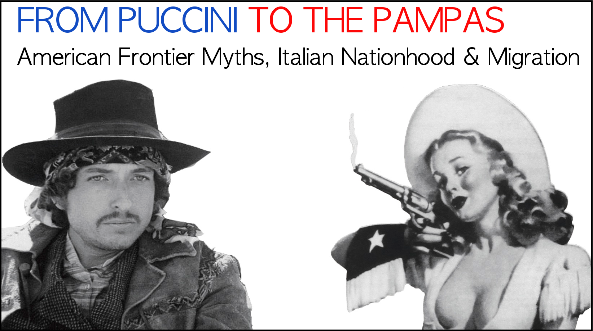
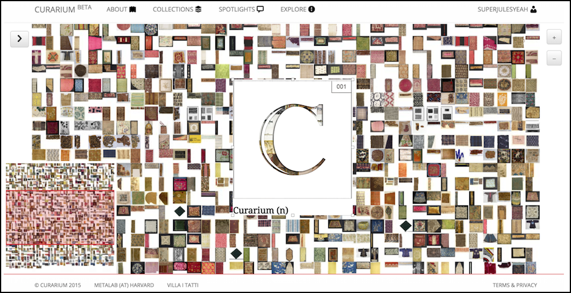
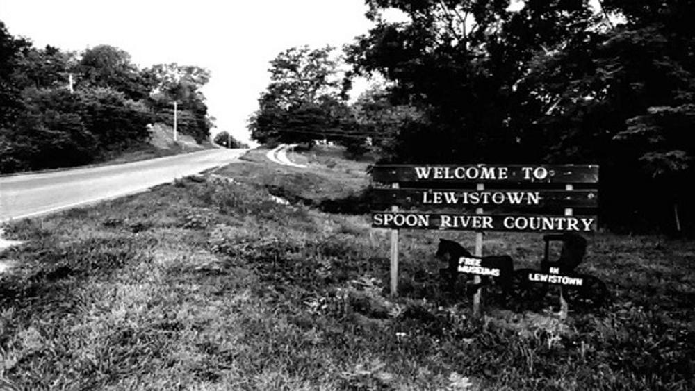

From Puccini to the Pampas :
Expanding the work of the first chapter of my dissertation, "Italian Cowboy Songs," this is a book project
that examines popular myths of new-world frontiers in Italy across the 20th century. I propose that these
tales at once reflect the
nation-building effort and reveal/reinforce deep fractures in the Italian national identity, and that
after 100 years,
they continue to expose the unresolved nature of the Italian-unification project.
|

A Voice of Dissent
Fabrizio De André: A Voice of Dissent from the Medieval to Countercultural is the title of my
first book project, an exploration of De André's comprehensive critique of Western
modernity in the first 25 years of his musical production. My argument unfolds in three parts
(Punishment and Civilization, Re-Enchanted Modernity, The Far West and the Counterculture)
and puts De André in conversation with cultural theorists, historical precursors, contemporary
mass-media producers, and fellow singer-songwriters.
|

Fractal Realism :
"Fractal Realism" is a term I've coined to categorize research I do around the short
stories and essays of Jorges Luis Borges, particularly as they relate to the works
of Italian authors like Dante Alighieri and Massimo Bontempelli. For further reading, see
"Chess Set Theory" and "Minimal Description in 20th-Century Short Fiction" at my Writing page.
(Art by Sasha Laskowsky-Ziguilinsky: neopren.tumblr.com.)
|

Curarium :
Curarium is a tool that lets users
annotate, curate and augment records
of artworks, with the aim of constructing shareable, media-rich stories about
collections and the objects that comprise them. It is also a space, on the
developer's side, where we can begin to think about visualization tools
that make exploration and argumentation more powerful. I am the project lead on Curarium at metaLAB.
Read more about the connections between this DH project and my humanities research in the
Spring 2016
issue of Harvard's Colloquy.
|

The Italian Myth of Masters :
This is a project spanning a book chapter and several articles, that investigates - through the lens of
translation studies,
comparative cultural studies, and countercultural studies - the history of Edgar Lee Masters and his
Spoon River Anthology in Italy.
From Pavese and Pivano to Fabrizio De André, I consider how and why the author and his work have extremely
different legacies
in the US and Italy. For further reading, see my Writing page.
|

Translating Beyond the Textual :
Translating Beyond
the Textual
is a project I developed in my first year of graduate school. It takes the idea
Google Translate and extends it beyond the textual, to
visualize the various historical representations of "L'Après-midi d'un faune,"
as a poem by Mallarmé, as symphony poem for orchestra by Debussy,
and as a ballet by Nijinski.
|